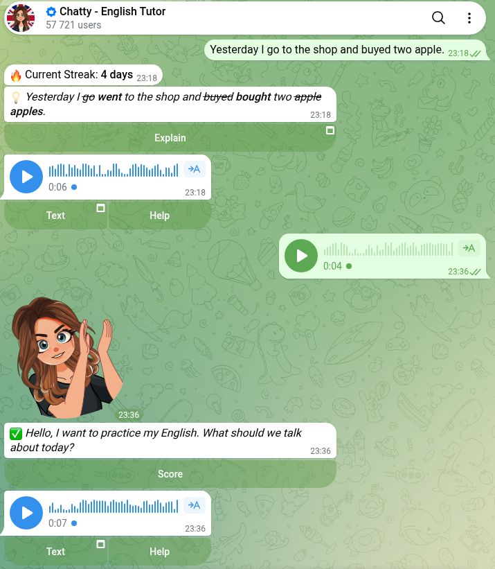

Telegram Bots for Learning English: 83 Tested, 3 Talk Back
On 27 October 2026 I sent /start to 83 Telegram bots for learning English: the ones Telegram’s own search returned for 15 learner searches, plus two from web lists. 45 answered. On 30 October the ones that offer something got a test: a sentence with three mistakes, a voice note, or a press of their own lesson button. Five bots fixed all three mistakes. Three answered my voice note the way a conversation partner would. Six gave me a task straight away.
What surprised me was everything around the lesson. Free tiers are counted in messages: one exchange on @ChattyTutorBot, ten on two others, one mock test a day on a fourth. Two bots signed me up for a webinar or an open lesson the moment I pressed Start. And 19 of the 83 kept writing afterwards: 78 messages in four days.
How I tested
- Corpus. 15 searches in Telegram’s own search box, picked from what Google suggests for “telegram bot for learning”: learn english, english tutor, speaking practice, english grammar, ielts and so on, plus the Russian and Ukrainian words for English. They gave 91 different bots. The only one with the verified badge was a forex broker’s support bot that matched the word “English”. Two web searches for lists added two more: @PocketAnkiBot and @EnglishLanguageTutorFreeBot.
- Not every “English” bot is for learners. I left out eight by their own description: five for teachers, a posting tool, the broker and a course payment bot. Bots that sell a course stayed in: a learner meets them in the same search, and the test shows what’s free.
/start, then 10 seconds. The 83 that were left got/starton 27 October 2026, one every 15 seconds. Silent chats were checked again later.- Three tests, assigned before any test message was sent, each only to the bots whose own first message offers that thing:
- Correction (8 bots): I sent
Yesterday I go to the shop and buyed two apple.A pass needs all three fixes: went, bought, apples. - Speaking (8 bots): a 4.2-second voice note saying “Hello, I want to practise my English. What should we talk about today?”, made with the open-source Piper voice
en_US-lessac-medium. Before using it I ran it through a speech-recognition bot, which wrote back the same sentence. A pass is a reply that answers what I said. - Free lesson (15 bots): I pressed the bot’s own “start / lesson / quiz” button and counted what I got before anything asked for money, Stars or a friend invite.
- Correction (8 bots): I sent
- One extra tap, recorded as such. Five bots stopped a test with a question their first message hadn’t shown (a level, a practice format) or an error. They got one retry with the option closest to free conversation; the tables say which results came from it.
- Nothing was paid for, no channel was joined, no phone number or email was given, and the only name I typed was the nickname “CM test”.
Who answered at all
Of the 83, 44 answered within 10 seconds and one more after five minutes. The other 38 said nothing, including @EnglishLanguageTutorFreeBot, the one whose developer describes it online as a free AI tutor. Among the 45 that did answer, 25 offered something I could test. The other 20:
- 13 are walls or closed. Three want you to subscribe to a channel (or two more bots) first, one to join a teacher’s group. One asks for your phone number, one for an email, one for an account on its website. Four are private or for a school’s own students, one is an empty shell, and one told me its mailing “has already ended”.
- Two moved to a new bot and sent me there.
- Two open a Mini App straight away, so there’s nothing to test in the chat.
- Three are sales funnels, and two of them signed me up for something on
/startalone, without a button: “You have successfully registered for the online webinar” and “You are registered for the open lesson”. Between them they sent 23 more messages in the next four days.
Correction: five fixed all three mistakes
The sentence was Yesterday I go to the shop and buyed two apple. Three bots fixed all three mistakes in their first reply. Two more did it after one tap on a question they asked first. Three never got there.

| Bot | What came back | Result |
|---|---|---|
| @ChattyEnglishBot | My sentence with go, buyed and apple struck through and the right words next to them, plus a voice note | All three, at once |
| @ChattyTutorBot | The same format, word for word | All three, at once |
| @TalksyEnglishBot | A ❌ line with my sentence, a ✅ line with the fixed one, plus a voice note | All three, at once |
| @Practice_en_de_bot | First asked for my level. After “B1”: one card per mistake, explained in Russian, then “What did you plan to do with the apples?” | All three, after one tap |
| @enpra_bot | “There’s no active scene right now.” After “Free conversation”: “What kind of apples did you buy? Were they tasty?” and a corrections line | All three, after one tap |
| @bezperevoda_ai_bot | “First choose a practice format”, four times, with no button that did it | None |
| @flamingo_teacher_bot | “I hit a technical error while generating the answer”, every time | None |
| @EnglishTutorHelperBot | Nothing, twice | None |
The two that did best after a retry are the more useful teachers. @enpra_bot answered what I said and corrected it in the same message. @Practice_en_de_bot explained each mistake instead of just swapping the word, but in Russian, so it’s for Russian speakers.
@EnglishTutorHelperBot never answered because it isn’t that kind of bot: you send it words you met and it brings them back later. It was still waiting for me to pick a time zone, which didn’t stop it writing every evening: “It’s time to work on your words, but you don’t have any at the moment”.
Speaking: three answered my voice note
The voice note asked “What should we talk about today?”, so a bot that listens has to suggest a topic. I ran each voice reply back through the same speech-recognition bot to read it.
| Bot | Reply to my voice note | Result |
|---|---|---|
| @ChattyEnglishBot | Wrote out what I said with a ✅, then a 7.7-second voice reply: “Since you went to the shop yesterday, let’s talk about food. What’s your favorite snack?” | On topic |
| @TalksyEnglishBot | “Correct ✅” and a 15.6-second voice reply: “Let’s talk about daily routines… Tell me about your morning routine yesterday.” | On topic |
| @Practice_en_de_bot | After the level question: “We can talk about anything you like. How about discussing your favorite hobbies?” | On topic, after one tap |
| @speaking_task1_bot | The exact transcript and “Estimated IELTS score: 3.5”, split into fluency, vocabulary, grammar and pronunciation | An examiner, not a partner |
| @engimini_tutor_bot | “✅ Correct” and nothing more | Grammar check only |
| @ChattyTutorBot | “Subscribe to continue chatting” | Paywall on my second message |
| @speaking_practicebot | 18 minutes later, in Uzbek: choose a practice section first, then send a voice answer | Menu first |
| @bezperevoda_ai_bot | “First choose a practice format” | None |
@ChattyEnglishBot, the biggest bot in the search (60,265 monthly users on 26 October), is the only one that remembered what came before: it had corrected my shop sentence a few minutes earlier, and it picked food as the topic because of it.
Its twin is the cautionary tale. @ChattyTutorBot (10,537 users) sends the identical greeting and corrected my sentence in the same format, then answered my voice note with “❤️ Subscribe to continue chatting… Click CONTINUE to get unlimited access”. Its free tier was one exchange. @ChattyEnglishBot didn’t ask for money in the same two messages.
About the icon next to Chatty’s name in the screenshot: it isn’t Telegram’s blue check. The bot’s profile says “This bot was verified by the organization ‘Major’”. Telegram lets approved outside services put their own icon on accounts through third-party verification. Telegram’s own verified flag on this bot is off. So the icon tells you that one company vouches for it, nothing about whether it teaches well.
Two bots state their free tier up front: @engimini_tutor_bot gives “10 free voice messages to try out”, @Practice_en_de_bot a “trial period of 10 messages”.
Free lessons: six gave a task straight away
Of the 15 bots that offer a lesson, six gave me a task at once:
- @MostEssentialEnglishWordsbot:
/quizgave a word card, “afraid (adj.)”, with a definition and an example. Three new words a day. - @grizzly_english_bot: a 70-word A1–A2 text about bees, the hard words from it and a short quiz.
- @ZenEnglishX_bot: flashcards (“letter”) with show translation, I know it and I don’t.
- @englishv_bot:
/getwordis a synonym quiz. The first option I pressed, “sad”, got “❌ Wrong! sad is not a similar meaning to went”. - @OctoLingoBot and @learn_new_english_words_bot: flashcards of your own words. I sent OctoLingo “apple - яблуко” and it became a card.
Five more got there after some setup. @PocketAnkiBot asked my language and my reason, then sent a full card: “Interview”, the Ukrainian translation, the transcription, a meaning and two example sentences. @EnglishByLoukyaBot runs a 20-question mock test as Telegram quiz polls, 10 seconds a question, but it’s prep for Indian government-job and bank exams, and you get one free test every 24 hours. @EnglishMasteringBot wanted a nickname for its leaderboard first, and @EnglishPracticeVbot a level and a topic before a word list. @SpeakingIeltsPractice_Bot lists IELTS Part 1 topics and points you to a channel for ideas: a question bank, not someone to talk to.
Four gave me nothing to learn. @ChattyWordsBot asked eight questions in a row, from my motivation to my three-month goal, and still hadn’t shown a single word. @voca_en_bot is an advert for an app. @flamingo_teacher_bot answered /today with “I hit a technical error while starting the lesson”.
The fourth is the strange one. @leearnenglishh_bot shows three documents (a public offer, a privacy policy and a consent to personal data processing) and a button, “I have read and accept”. None of the four buttons did anything when I pressed them on 30 October, again and again: no message, no pop-up, no link. Yet since the morning after my /start, without my accepting anything, it has sent a “Quote of the day” every morning at the same minute.
What they send you afterwards
For four days after /start I counted what arrived unasked: anything that came more than ten minutes after my last message, outside the test session. 19 of the 83 bots wrote first, 78 messages in all. The other 64 never did.
- The two sales funnels were the loudest. @shekhterion_school_bot sent 13: a pitch for its method an hour after
/start, then a countdown to its open lesson (tomorrow, today, in an hour, in ten minutes, “we’ve started”), then the date of the next one. @ListeningWebinarStordarBot sent 10, starting with the founder introducing herself. - Most of the rest are daily reminders. @ChattyWordsBot writes twice a day, and on day four it said “You’ve already learned 0 words! Keep it up!”. @OctoLingoBot spent three mornings telling me there was nothing to review. @ChattyEnglishBot sent one nudge a day, and on 31 October it came back to my test sentence: “At the shop, you can say: ‘I’d like two apples, please.’”
- A few send something to learn. @TalksyEnglishBot alternates an idiom of the day with a quiz poll, and @grizzly_english_bot sends a new reading topic every morning.
- Two advertised something else. @ZenEnglishX_bot sent a free VPN offer and an AI video bot before its first reminder. @marble_english_bot pitched a private channel of ready-made lessons for teachers.
What I’d use
- To practise talking: @ChattyEnglishBot. It fixed all three mistakes at once, answered my voice note on topic and remembered the sentence before it. If you want the reply as a conversation rather than a correction, @enpra_bot’s “Free conversation” does both in one message.
- For new words: @PocketAnkiBot if you want full cards with examples and a Ukrainian, Russian or English interface, @MostEssentialEnglishWordsbot if three words a day is the pace you’ll keep.
- For reading: @grizzly_english_bot, the only one that gave me a real text to read.
- For IELTS speaking: @speaking_task1_bot scores a voice answer the way an examiner would. It won’t chat with you.
And three habits from this test. Count the free tier in messages before you start: one, ten and ten were the numbers I saw. Read a bot’s first message before you press anything, because two of these registered me for a webinar or an open lesson on /start alone. And if a bot starts writing to you every day, block it from its profile.
Practise English with friends, not a bot
The free Party Game runs Truth or Dare, Never Have I Ever and Would You Rather as a Mini App inside Telegram, in English or Ukrainian. Play it in English with a friend who’s learning too. No subscription, no daily messages, nothing to sign up for.
Open the Party Game Need a straight translation instead of a lesson? See the translator bots I tested.FAQ
Is there a free Telegram bot for learning English?
Yes, several, but most free tiers are small. In my test on 30 October 2026, @MostEssentialEnglishWordsbot, @grizzly_english_bot, @ZenEnglishX_bot and @englishv_bot gave a lesson straight away for free, and @ChattyEnglishBot corrected a sentence and answered a voice note without asking for money. Others stop after one exchange, ten messages or one test a day.
Which Telegram bot is best for English speaking practice?
Of the eight that promise speaking practice, three answered my voice note with a reply on topic: @ChattyEnglishBot, @TalksyEnglishBot and @Practice_en_de_bot (after a level question). @speaking_task1_bot gives an IELTS-style score instead of a conversation. @ChattyTutorBot asked me to subscribe on my second message.
Can a Telegram bot correct my English grammar?
Some can. I sent “Yesterday I go to the shop and buyed two apple.” to eight bots. @ChattyEnglishBot, @ChattyTutorBot and @TalksyEnglishBot fixed went, bought and apples at once; @Practice_en_de_bot and @enpra_bot did after one setup tap. Three never corrected anything.
Are English learning bots on Telegram safe?
Mostly, but read the first screen. Two bots registered me for a webinar or an open lesson on /start alone, one asked for a phone number and one for an email. 19 of the 83 kept writing to me afterwards, up to 13 messages in four days; if that bothers you, block the bot from its profile.